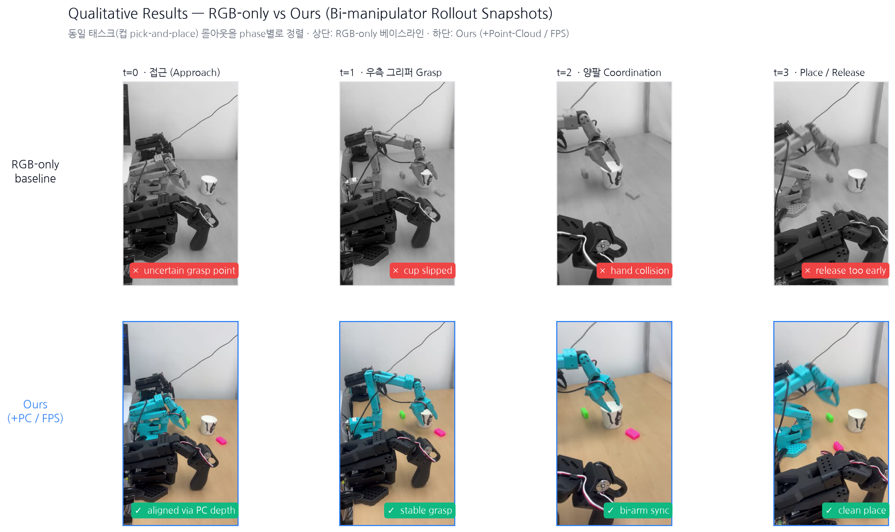

실기 SO-101 양팔 로봇에서 시연을 수집하고, 해당 데이터를 이용해 VLA 정책을 학습한 뒤 실제 로봇에서 폐루프 실행을 평가하는 전체 연구 흐름입니다.
다음 연구 질문으로 이어진 경험
SO-101 실기 로봇의 teleoperation 시연을 직접 수집하고 VLA 정책을 학습·평가하면서, 실제 환경에서 다양한 상태와 행동을 충분히 경험시키는 데이터의 중요성을 체감했습니다. 시연 수집은 시간과 장비가 필요한 과정이므로, 이후에는 World Model로 학습 데이터를 생성·확장할 수 있을까?라는 질문으로 관심을 넓혔습니다.
이후 별도 SO-100 데이터셋을 사용한 World Model 프로젝트에서 action-conditioned rollout을 생성하고, train/eval action 분포와 생성 결과의 Good/Bad case를 분석하며 action 표현과 모델 튜닝을 진행했습니다. 두 프로젝트의 데이터셋을 직접 이어 붙인 것은 아니며, 실제 로봇 학습 경험에서 얻은 데이터 효율성에 대한 문제의식이 후속 연구 질문에 영향을 준 흐름입니다.
01 · Research Context — Real-Robot Demonstration
양팔 조작 정책은 물체와 두 로봇 팔의 상대적 위치, 카메라 시점, 로봇의 관절 상태를 함께 고려해야 합니다. RGB 영상만으로도 장면을 인식할 수 있지만, 깊이와 3차원 위치 정보가 필요한 조작에서는 이미지 좌표만으로 공간 관계를 추정해야 하는 부담이 있습니다. 이 프로젝트에서는 실제 로봇 시연을 수집하고, RGB·Point Cloud·로봇 상태 정보를 정책 입력으로 구성하는 방법을 탐색했습니다.
02 · System Setup & Demonstration Data
실기 SO-101 양팔 로봇에서 리더-팔로워 방식의 원격 조작 환경을 구성하고, 시연 데이터를 수집·정리한 뒤 VLA 정책 학습과 폐루프 실행까지 연결하는 것을 목표로 삼았습니다. 또한 RGB 영상에 Point Cloud와 관절 상태를 추가해 시각 정보와 기하학적 정보를 함께 활용하는 입력 구조를 구현했습니다.
03 · Method — Multi-modal Observation & Policy Learning
리더-팔로워 방식의 실기 시연 수집
먼저 SO-101 양팔 로봇의 리더-팔로워 teleoperation 환경을 구성했습니다. 작업자가 리더 로봇을 조작하면 팔로워 로봇이 같은 동작을 수행하도록 연결하고, 카메라 관측과 로봇 상태, 액션을 에피소드 단위로 기록했습니다. 수집한 시연은 정책 학습에 사용할 수 있도록 정리했으며, 이후 실제 로봇에서 정책을 실행하는 폐루프 평가까지 이어갔습니다.
RGB 관측에 3차원 기하 정보 추가
RGB 영상만 사용하는 방식과 비교해, 깊이 카메라에서 얻은 Point Cloud를 비전 입력 경로에 추가하는 구조를 구현했습니다. Point Cloud는 물체와 로봇 팔 사이의 공간적 관계를 3차원 좌표로 표현할 수 있다는 장점이 있습니다. 점을 무작위로 추출하면 특정 영역에 표본이 몰릴 수 있어, 공간적으로 고른 점을 선택하는 Farthest Point Sampling(FPS)을 적용했습니다.
다중 카메라와 로봇 상태의 시간 정렬
Top·Front·Wrist 카메라 3개 시점과 로봇의 proprioceptive state를 함께 사용하도록 입력 구조를 구성했습니다. 각 관측과 액션이 같은 시간 구간을 가리키도록 정렬해, 장면의 전역 정보와 손목 주변의 세부 정보, 로봇 자체의 상태를 정책이 함께 활용하도록 설계했습니다.

정책 입력과 출력의 전체 구조입니다. Top·Front·Wrist RGB 영상, FPS로 샘플링한 Point Cloud, 로봇 상태 정보를 융합해 VLA 정책에 전달하고 양팔 액션을 출력합니다.

리더-팔로워 방식의 시연 수집 장면입니다. 작업자의 조작을 팔로워 로봇의 동작과 함께 기록해 학습용 에피소드를 확보합니다.

학습한 정책을 실제 양팔 로봇에서 실행한 폐루프 롤아웃 예시입니다. 컵을 집고 이동하는 동작을 통해 관측과 액션이 실제 로봇 제어로 연결되는지 확인했습니다.

RealSense 깊이 영상에서 복원한 Point Cloud와 FPS 샘플링 결과입니다. 원본 점군의 밀집 분포를 줄이면서 공간 전체를 고르게 표현하도록 점을 선택했습니다.
04 · Evaluation, Evidence & Limitations
실기 로봇의 시연 데이터 수집부터 정책 학습과 폐루프 평가까지 이어지는 파이프라인을 수행했습니다. Point Cloud에 Farthest Point Sampling(FPS)을 적용하고, 3개 카메라 영상과 로봇 상태 정보를 함께 사용하는 입력 구조를 구현했습니다. 다만 현재 정량 벤치마크와 RGB-only 대조 실험은 확보하지 못했으므로, 이 입력 구성이 위치 기억 오류나 자세 추정 오류를 개선했다고 단정하지 않습니다.

RGB-only 입력과 Point Cloud/FPS 입력의 차이를 설명하기 위해 구성한 개념도입니다. 실제 성능 비교 결과가 아니라 입력 구조의 설계 의도를 보여주는 자료이며, 성공률과 궤적 오차를 이용한 정량 비교는 별도 실험이 필요한 상태입니다.
05 · Follow-up Research Question — Data Efficiency
실기 시연 수집에서 경험한 데이터 확보 비용과 행동 분포의 제한은 이후 World Model 프로젝트의 문제의식으로 이어졌습니다. 후속 프로젝트는 별도의 SO-100 데이터셋으로 수행했으며, 본 프로젝트의 SO-101 시연 데이터를 직접 재사용하지 않았습니다.